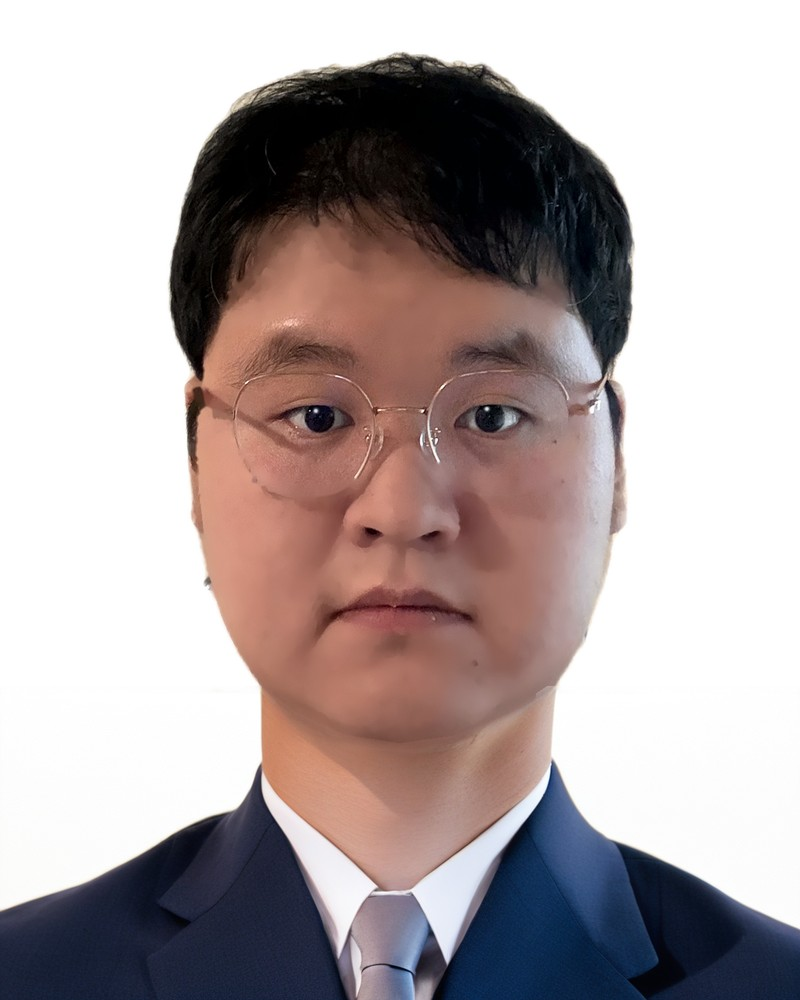

PhD student in Mathematics, Texas A&M University

I am a PhD student in the Department of Mathematics at Texas A&M University, advised by Tian Yang. My research interests are in hyperbolic geometry and the volume conjecture.
The Chen–Yang volume conjecture for a hyperbolic 3-manifold \(M\), stated for the Turaev–Viro invariants \(\mathrm{TV}_r\).
We prove the Volume Conjecture and the Asymptotic Expansion Conjecture for closed oriented hyperbolic 3-manifolds obtained by integral Dehn-fillings along a fundamental shadow link complement, provided that their volumes are sufficiently close to that of the complement. More generally, we show that the conjectured asymptotic expansions hold for pairs obtained by change-of-pair operations on a fundamental shadow link complement whenever the volume of the corresponding hyperbolic cone manifold is sufficiently close to that of the complement. A key ingredient in the proof is the introduction of extended quantum \(6j\)-symbols and a Weak Reflection Symmetry satisfied by them. The Weak Reflection Symmetry is established by relating the extended quantum \(6j\)-symbols to the \(b\)-\(6j\) symbols through a real Gevrey-1 estimate and a truncated Borel–Laplace transform.
We study the \(b\)-\(6j\) symbols, an analytic extension of the \(6j\)-symbols for the principal series of the modular double of \(\mathrm U_q\mathfrak{sl}(2;\mathbb R)\), with complex index \(b\), referred to as the complex \(b\)-\(6j\) symbols. Then we relate their asymptotics, when the six parameters scale according to the dihedral angles of a hyperideal hyperbolic tetrahedron, to the volume and the determinant of the Gram matrix of the tetrahedron. In the case \(\arg b=\pm\frac{\pi}{4}\), we believe that this work is closely related to the complex Liouville string.
Thurston's triangulation conjecture asserts that every hyperbolic 3-manifold admits a geometric triangulation into hyper-ideal hyperbolic tetrahedra. So far, this conjecture had only been proven for a few special 3-manifolds. In this article, we confirm this conjecture for a class of 3-manifolds. To be precise, let \(M\) be an oriented compact 3-manifold with boundary, no component of which is a 2-sphere, and \(\mathcal T\) an ideal triangulation of \(M\). If \(\mathcal T\) satisfies the properly gluing condition, and the valence is at least 6 at each ideal edge and 11 at each hyper-ideal edge, then \(M\) admits a unique complete hyperbolic metric with totally geodesic boundary, so that \(\mathcal T\) is isotopic to a geometric ideal triangulation of \(M\). We use analytical tools such as combinatorial Ricci flow (CRF) to derive the conclusions. There are intrinsic difficulties in dealing with CRF. First, the CRF may collapse in finite time; second, most smooth curvature flow methods are no longer applicable since there are no local coordinates in \(\mathcal T\); and third, the evolution of CRF is affected by certain combinatorial obstacles in addition to topology. To this end, we introduce the ideas of “extending CRF”, “tetrahedral comparison principles” and “controlling CRF with edge valence” to solve these difficulties. In addition, the presence of torus boundary adds substantial difficulties, which we solve by introducing the properly gluing conditions on \(\mathcal T\) and reducing the extended CRF to a flow that is easier to handle.
For a twist knot \(\mathcal K_{p'}\), let \(M\) be the closed 3-manifold obtained by doing \((p,q)\) Dehn filling along \(\mathcal K_{p'}\). In this article, we prove that Chen–Yang's volume conjecture holds for \(M\) for sufficiently large \(|p|+|q|\) and \(|p'|\). In the proof, we construct a new ideal triangulation of the Whitehead link complement which is different from Thurston's triangulation. Our triangulation has led to some new discoveries regarding symmetry, including insights into the “sister manifolds” introduced by Hodgson, Meyerhoff and Weeks.
meng.yun@tamu.edu